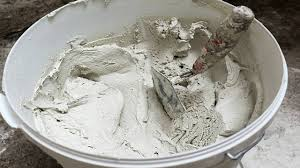

أنواع الإسمنت واستخداماتها
| النوع | الاستخدامات الرئيسية | المميزات |
|---|---|---|
| الإسمنت البورتلاندي العادي (OPC) | الخرسانة العامة، المباني، الطرق | متعدد الاستخدامات، سريع التصلب |
| الإسمنت البورتلاندي المُعدل | المنشآت الكبيرة (السدود، الجسور) | حرارة إماهة منخفضة، مقاومة أعلى للكبريتات |
| إسمنت سريع التصلب | الإصلاحات السريعة، الطوارئ | قوة مبكرة عالية |
| الإسمنت الأبيض | الأعمال المعمارية، الديكور | لون أبيض نقي، يحتوي على نسبة قليلة من أكسيد الحديد |
| الخرسانة القماشية (Concrete Canvas) | الإنشاءات السريعة، المناطق النائية، الإصلاحات الطارئة | تركيب سريع، لا يحتاج إلى خلط أو معدات، مقاومة للماء فور التثبيت |

الإسمنت البورتلاندي العادي

الإسمنت الأبيض في التصاميم المعمارية
الخرسانة القماشية أثناء التركيب